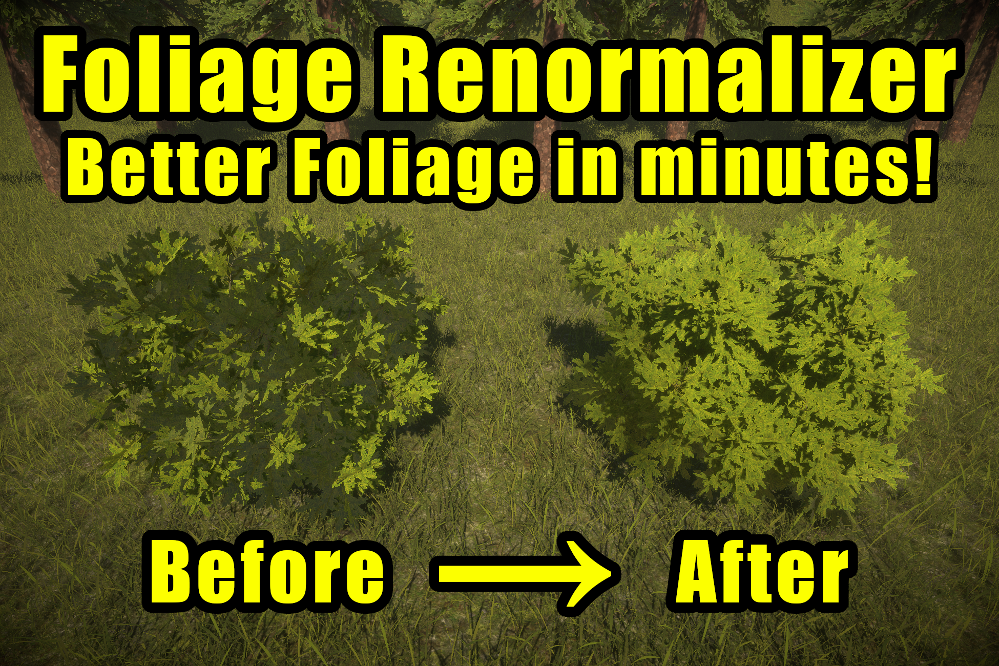

Overview

What is Ultimate Foliage Renormalizer?
Ultimate Foliage Renormalizer is an editor tool that fixes the single biggest problem with real-time foliage: lighting. Most trees, bushes, and grass are built from flat cards and individual leaf meshes. Their vertex normals point straight out of each leaf, so when light hits them the foliage looks flat, noisy, and "papery" — nothing like the solid, rounded volume a real plant reads as.
Foliage Renormalizer rebuilds those normals so your foliage catches light as a single cohesive volume. The result is dramatically better looking trees, bushes, and grass — in minutes, with no art rework.
How It Works
The tool wraps a smooth proxy mesh around your foliage and transfers that proxy's normals back onto your original mesh. Because the proxy is a clean, rounded shell of the whole plant, the leaves inherit "canopy" normals that point outward from the volume as a whole, rather than from each individual card.
There are two workflows:
- Grass Mode — For grass, clovers, and other small details. Normals are pushed smoothly upward in a single click. Fast and simple, with a big impact on quality.
- General Mode — For trees, bushes, and larger plants. You generate a proxy mesh, then transfer its normals onto your foliage. This gives you full control over the final look.
As a bonus, the same proxy mesh is used to bake high-quality ambient occlusion into your mesh's vertex colors, adding natural shading depth to the interior of the canopy.
Non-Destructive
Foliage Renormalizer never overwrites your source assets. It generates new mesh assets to a save path of your choosing and keeps a reference to your original mesh, so you can restore the original at any time with a single button. None of the tool's components or data make it into a player build — it is purely an editor-time authoring tool.
Compatibility
Note
Ultimate Foliage Renormalizer does not require you to use any included shader. It is compatible with any shader or rendering system (such as TVE). When baking AO into vertex color, just make sure to select a channel that your shader reads for vertex color AO (in TVE, for example, the Green channel is used by default).
| Supported | |
|---|---|
| Unity Version | 2021.3+ (ShaderGraph 2021.3+ for the Built-In demo) |
| Render Pipelines | Built-In (BIRP), Universal (URP), High Definition (HDRP) |
| Shaders | Any shader. The output is just a mesh with new normals and vertex colors. |
| Third-Party Foliage | Works alongside systems like The Vegetation Engine (TVE) |
Where to Start
- New to the tool? Begin with Getting Started to import the package and set up the demo scenes.
- Ready to renormalize your own foliage? Jump straight to First Steps.